Neste trabalho utilizaremos o software R pela praticidade e por ser software estatístico mais utilizado pela comunidade. No R diversos pacotes são destinado a Machine Learning e Statistical Learning, como pode ser visto em Cran Task Views.
Aqui, seguindo as recomendações do texto base da disciplina An Introduction to Statistical Learning, utilizaremos o pacote e1071 que é uma implementação em R baseada na LIBSVM.
## Pacote principal
library(e1071)
##-------------------------------------------
## Outros pacotes
## library(LiblineaR)
## library(klaR)
## library(kernlab)
## library(rdetools)Para a aplicação dos métodos de classificação via SVM serão utilizados os dados OJ (Oranje Juice) do pacote ISLR (pacote complementar do livro-texto da disciplina). Esses dados reference a 1070 observações sobre compra de sucos de laranja em um mercado. Os registros contemplam a informação de interesse, suco comprado CC para Citrus Hill e MM Minute Maid e demais 17 características sobre o cliente e produto.
##======================================================================
## Os dados
## help(OJ, h = "html")
data(OJ, package = "ISLR")
str(OJ)## 'data.frame': 1070 obs. of 18 variables:
## $ Purchase : Factor w/ 2 levels "CH","MM": 1 1 1 2 1 1 1 1 1 1 ...
## $ WeekofPurchase: num 237 239 245 227 228 230 232 234 235 238 ...
## $ StoreID : num 1 1 1 1 7 7 7 7 7 7 ...
## $ PriceCH : num 1.75 1.75 1.86 1.69 1.69 1.69 1.69 1.75 1.75 1.75 ...
## $ PriceMM : num 1.99 1.99 2.09 1.69 1.69 1.99 1.99 1.99 1.99 1.99 ...
## $ DiscCH : num 0 0 0.17 0 0 0 0 0 0 0 ...
## $ DiscMM : num 0 0.3 0 0 0 0 0.4 0.4 0.4 0.4 ...
## $ SpecialCH : num 0 0 0 0 0 0 1 1 0 0 ...
## $ SpecialMM : num 0 1 0 0 0 1 1 0 0 0 ...
## $ LoyalCH : num 0.5 0.6 0.68 0.4 0.957 ...
## $ SalePriceMM : num 1.99 1.69 2.09 1.69 1.69 1.99 1.59 1.59 1.59 1.59 ...
## $ SalePriceCH : num 1.75 1.75 1.69 1.69 1.69 1.69 1.69 1.75 1.75 1.75 ...
## $ PriceDiff : num 0.24 -0.06 0.4 0 0 0.3 -0.1 -0.16 -0.16 -0.16 ...
## $ Store7 : Factor w/ 2 levels "No","Yes": 1 1 1 1 2 2 2 2 2 2 ...
## $ PctDiscMM : num 0 0.151 0 0 0 ...
## $ PctDiscCH : num 0 0 0.0914 0 0 ...
## $ ListPriceDiff : num 0.24 0.24 0.23 0 0 0.3 0.3 0.24 0.24 0.24 ...
## $ STORE : num 1 1 1 1 0 0 0 0 0 0 ...O exercício da obtenção de um classificador para esse conjunto de dados também foi proposto no exercício 8, pág. 371 de An Introduction to Statistical Learning. Seguindo as orientações do exercício particionaremos a base de dados em OJ.te e OJ.tr, as bases de teste e treino respectivamente. 800 observações serão tomadas para treino.
##----------------------------------------------------------------------
## Separando os dados em teste e treino
set.seed(2016)
index <- sample(nrow(OJ), 800)
OJ.tr <- OJ[index, ]
OJ.te <- OJ[-index, ]A seguir serão propostos classificadores com base em SVM, considerando kernel linear (que adotando um valor de custo para classificações incorretas, tem o nome de Support Vector Classifiers), polynomial, radial e sigmoid.
A função e1071::svm(...) é a função destinada à determinação dos vetores de suporte. O pacote e1071 provém também diversos métodos para obtenção de resultados do classificador definido pela svm.
Nas próximas seções todos os ajustes dos classificadores são realizados via função svm. Abaixo é exibido os argumentos da função.
## Para determinar o classificador
## help(svm, h = "html")
args(e1071:::svm.default)## function (x, y = NULL, scale = TRUE, type = NULL, kernel = "radial",
## degree = 3, gamma = if (is.vector(x)) 1 else 1/ncol(x), coef0 = 0,
## cost = 1, nu = 0.5, class.weights = NULL, cachesize = 40,
## tolerance = 0.001, epsilon = 0.1, shrinking = TRUE, cross = 0,
## probability = FALSE, fitted = TRUE, ..., subset, na.action = na.omit)
## NULLPara comparação dos classificadores serão utilizados inspeções visuais da curva ROC, bem como os resultados obtidos pela classificação. Para exibição dos resultados a função compareROC foi implementada.
##======================================================================
## Funções utéis
library(Epi)
compareROC <- function(models) {
## Models uma lista nomeada com os resultados da função ROC do
## modelos classificadores a serem comparados
tableC <- sapply(models,
FUN = function(roc) {
index <- with(roc$res,
which.max(sens + spec))
round(cbind(roc$res[index, ],
"AUC" = roc$AUC), 4)
})
rownames(tableC) <- c("sens", "spec", "pvp", "pvn", "prob", "AUC")
return(tableC)
}\[ K(x_i, x_k) = \left \langle x_i, \, x_k \right \rangle \]
##-------------------------------------------
## Classificador default
(c0l <- svm(Purchase ~ ., kernel = "linear", data = OJ.tr,
probability = TRUE))##
## Call:
## svm(formula = Purchase ~ ., data = OJ.tr, kernel = "linear",
## probability = TRUE)
##
##
## Parameters:
## SVM-Type: C-classification
## SVM-Kernel: linear
## cost: 1
## gamma: 0.05555556
##
## Number of Support Vectors: 331## Resumo do classificador
summary(c0l)##
## Call:
## svm(formula = Purchase ~ ., data = OJ.tr, kernel = "linear",
## probability = TRUE)
##
##
## Parameters:
## SVM-Type: C-classification
## SVM-Kernel: linear
## cost: 1
## gamma: 0.05555556
##
## Number of Support Vectors: 331
##
## ( 167 164 )
##
##
## Number of Classes: 2
##
## Levels:
## CH MM## Tabela de classificação no treino
pred.tr0l <- predict(c0l, newdata = OJ.tr, probability = TRUE)
table(pred.tr0l, OJ.tr$Purchase)##
## pred.tr0l CH MM
## CH 442 81
## MM 55 222## Tabela de classificação no teste
pred.te0l <- predict(c0l, newdata = OJ.te, probability = TRUE)
table(pred.te0l, OJ.te$Purchase)##
## pred.te0l CH MM
## CH 137 21
## MM 19 93## Probabilidades associadas as decisões
probs.tr0l <- attr(pred.tr0l, "probabilities")[, 2]
probs.te0l <- attr(pred.te0l, "probabilities")[, 2]## Curvas ROC
par(mfrow = c(1, 2))
roc.te0l <- ROC(test = probs.tr0l, stat = OJ.tr$Purchase, plot = "ROC")
roc.tr0l <- ROC(test = probs.te0l, stat = OJ.te$Purchase, plot = "ROC")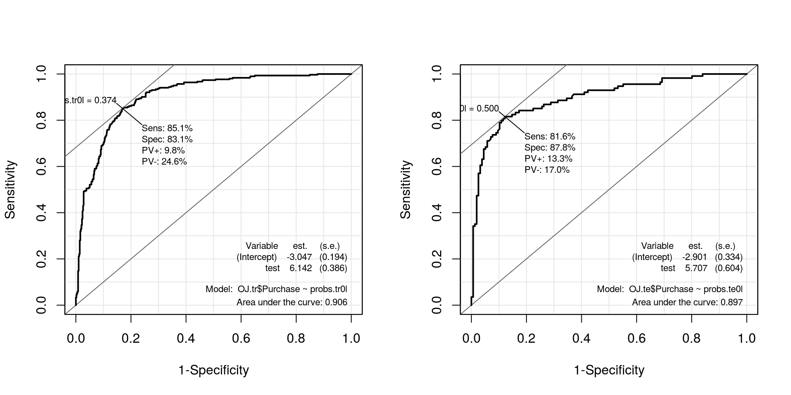
Perceba que a função svm define alguns argumentos sem que o usuário precise especificá-los. Pelo default da função o método, denominado em sala como Maximal Margin Classifier. Abaixo definidos diferentes valores para o “custo” (que define quantos vetores de suportes serão utilizados na definição da fronteira).
Comparação de classificadores via validação cruzada Cuidado o tuning é realizado via validação cruzada sob simulação assim diferentes realizações da função geram diferentes resultados. O refinamento dos parâmetros considerados para validação cruzada pode ser feito em tune.control().
## Cuidado !
set.seed(2016)
(svm.tune <- tune(svm, Purchase ~ ., data = OJ.tr, kernel = "linear",
ranges = list(cost = c(0.001, 0.5, 1, 10))))##
## Parameter tuning of 'svm':
##
## - sampling method: 10-fold cross validation
##
## - best parameters:
## cost
## 0.5
##
## - best performance: 0.17375summary(svm.tune)##
## Parameter tuning of 'svm':
##
## - sampling method: 10-fold cross validation
##
## - best parameters:
## cost
## 0.5
##
## - best performance: 0.17375
##
## - Detailed performance results:
## cost error dispersion
## 1 1e-03 0.34625 0.05104804
## 2 5e-01 0.17375 0.03458584
## 3 1e+00 0.17375 0.03458584
## 4 1e+01 0.18000 0.04005205plot(svm.tune)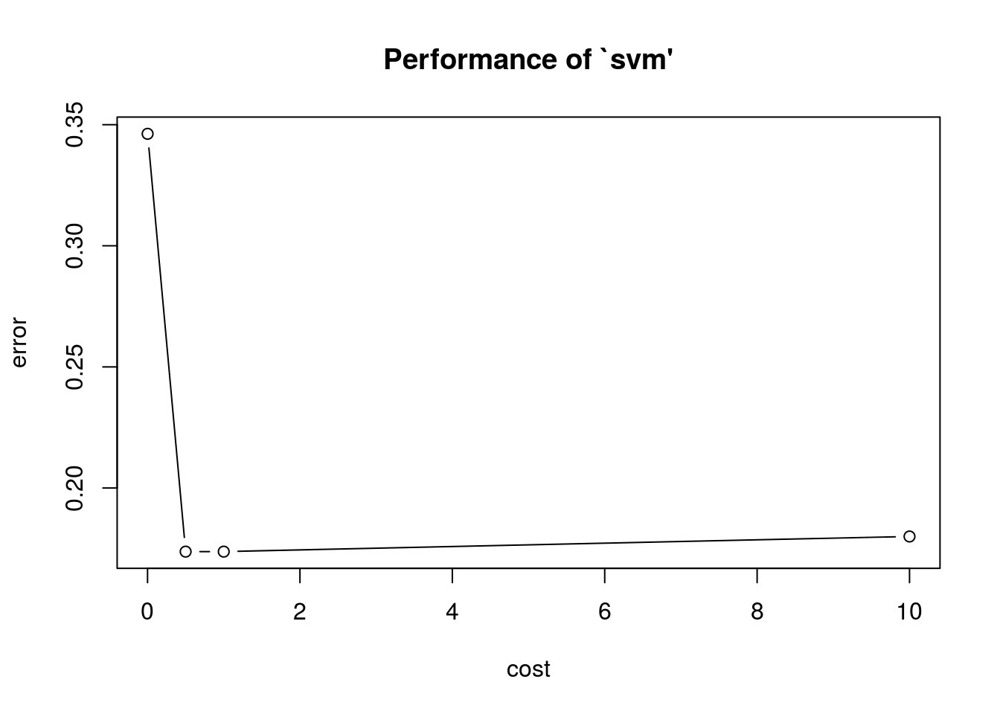
svm.tune$best.parameters## cost
## 2 0.5##-------------------------------------------
## Definindo os melhor classificador nas validações cruzadas
c1l <- svm(Purchase ~ ., kernel = "linear", data = OJ.tr,
cost = 0.5, probability = TRUE)
## Resumo do classificador
summary(c1l)##
## Call:
## svm(formula = Purchase ~ ., data = OJ.tr, kernel = "linear",
## cost = 0.5, probability = TRUE)
##
##
## Parameters:
## SVM-Type: C-classification
## SVM-Kernel: linear
## cost: 0.5
## gamma: 0.05555556
##
## Number of Support Vectors: 332
##
## ( 166 166 )
##
##
## Number of Classes: 2
##
## Levels:
## CH MM## Gráficos condicionais das fronteiras de classificação
## Cuidado! Os valores das demais covariáveis utilizadas para
## classificação são definidas como 0. Isso pode ser alterado pelo
## argumento slice()
plot(c1l, OJ.tr, WeekofPurchase ~ LoyalCH)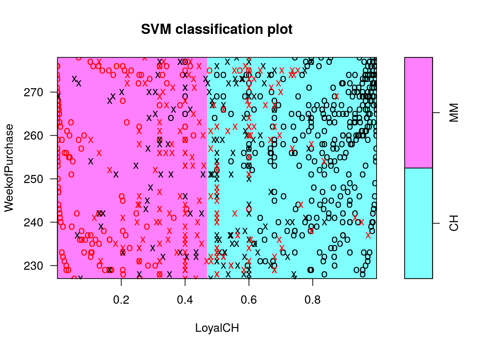
## Tabela de classificação no treino
pred.tr1l <- predict(c1l, newdata = OJ.tr, probability = TRUE)
table(pred.tr1l, OJ.tr$Purchase)##
## pred.tr1l CH MM
## CH 443 80
## MM 54 223## Tabela de classificação no teste
pred.te1l <- predict(c1l, newdata = OJ.te, probability = TRUE)
table(pred.te1l, OJ.te$Purchase)##
## pred.te1l CH MM
## CH 136 21
## MM 20 93## Probabilidades associadas as decisões
probs.tr1l <- attr(pred.tr1l, "probabilities")[, 2]
probs.te1l <- attr(pred.te1l, "probabilities")[, 2]## Curvas ROC
par(mfrow = c(1, 2))
roc.te1l <- ROC(test = probs.tr1l, stat = OJ.tr$Purchase, plot = "ROC")
roc.tr1l <- ROC(test = probs.te1l, stat = OJ.te$Purchase, plot = "ROC")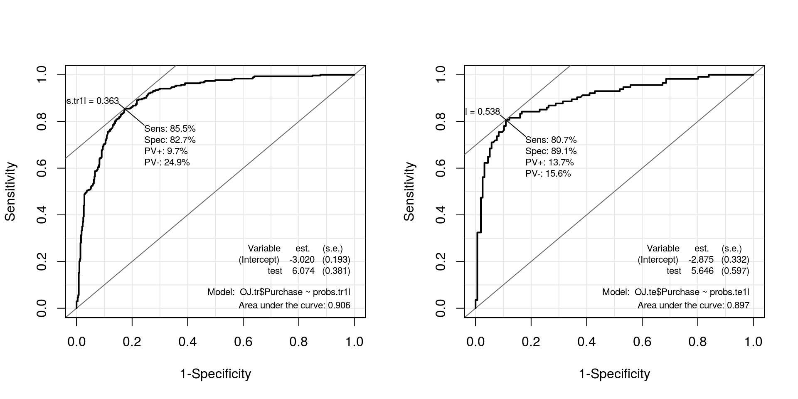
##----------------------------------------------------------------------
## Comparando via AUC, Sensibilidade, Especificidade, Negativo/Positivo,
## Positivo/Negativo e Pontos de Corte respectivamente.
models.linear <- list("c0l.treino" = roc.tr0l, "c1l.treino" = roc.tr1l,
"c0l.teste" = roc.te0l, "c1l.teste" = roc.te1l)
## Armazenando o classificador de melhor desempenho
models.final <- list("linear" = roc.te0l)
kable(compareROC(models.linear), align = c("c", "c", "c", "c"))| c0l.treino | c1l.treino | c0l.teste | c1l.teste | |
|---|---|---|---|---|
| sens | 0.8158 | 0.807 | 0.8515 | 0.8548 |
| spec | 0.8782 | 0.891 | 0.831 | 0.827 |
| pvp | 0.1329 | 0.1366 | 0.0983 | 0.0967 |
| pvn | 0.1696 | 0.156 | 0.2456 | 0.2493 |
| prob | 0.5 | 0.5375 | 0.3741 | 0.3634 |
| AUC | 0.8975 | 0.897 | 0.9064 | 0.9061 |
\[ K(x_i, x_k) = (c_0 + \gamma \left \langle x_i, \, x_k \right \rangle)^d \]
##----------------------------------------------------------------------
## kernel = polinomial default
(c0p <- svm(Purchase ~ ., kernel = "polynomial", data = OJ.tr,
probability = TRUE))##
## Call:
## svm(formula = Purchase ~ ., data = OJ.tr, kernel = "polynomial",
## probability = TRUE)
##
##
## Parameters:
## SVM-Type: C-classification
## SVM-Kernel: polynomial
## cost: 1
## degree: 3
## gamma: 0.05555556
## coef.0: 0
##
## Number of Support Vectors: 418## Resumo do modelo
summary(c0p)##
## Call:
## svm(formula = Purchase ~ ., data = OJ.tr, kernel = "polynomial",
## probability = TRUE)
##
##
## Parameters:
## SVM-Type: C-classification
## SVM-Kernel: polynomial
## cost: 1
## degree: 3
## gamma: 0.05555556
## coef.0: 0
##
## Number of Support Vectors: 418
##
## ( 210 208 )
##
##
## Number of Classes: 2
##
## Levels:
## CH MM## Classificação dos dados de teste
pred.te0p <- predict(c0p, newdata = OJ.te, probability = TRUE)
probs.te0p <- attr(pred.te0p, "probabilities")[, 2]
roc.te0p <- ROC(test = probs.te0p, stat = OJ.te$Purchase, plot = "ROC")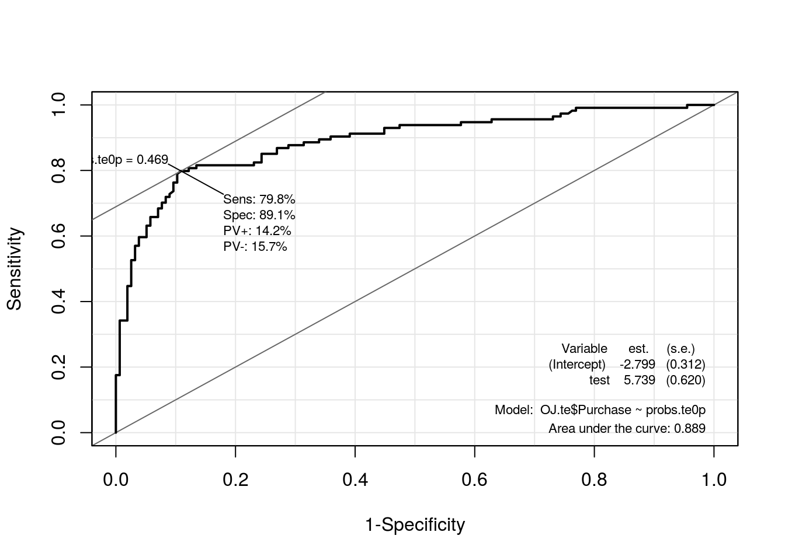
## Tuning dos parâmetros (um pouco, talvez bastante, demorado)
set.seed(2016)
(svm.tune <- tune(svm, Purchase ~ ., data = OJ.tr,
kernel = "polynomial",
ranges = list(
cost = c(0.01, 1, 10),
gamma = c(0.01, 1/ncol(OJ), 0.1),
coef0 = c(-1, 0, 1),
degree = c(2, 3, 4, 5)
)))##
## Parameter tuning of 'svm':
##
## - sampling method: 10-fold cross validation
##
## - best parameters:
## cost gamma coef0 degree
## 1 0.01 1 2
##
## - best performance: 0.175summary(svm.tune)##
## Parameter tuning of 'svm':
##
## - sampling method: 10-fold cross validation
##
## - best parameters:
## cost gamma coef0 degree
## 1 0.01 1 2
##
## - best performance: 0.175
##
## - Detailed performance results:
## cost gamma coef0 degree error dispersion
## 1 0.01 0.01000000 -1 2 0.37875 0.04678927
## 2 1.00 0.01000000 -1 2 0.66125 0.04875178
## 3 10.00 0.01000000 -1 2 0.65750 0.05041494
## 4 0.01 0.05555556 -1 2 0.52625 0.04267529
## 5 1.00 0.05555556 -1 2 0.63250 0.04533824
## 6 10.00 0.05555556 -1 2 0.63000 0.04647281
## 7 0.01 0.10000000 -1 2 0.59750 0.02934469
## 8 1.00 0.10000000 -1 2 0.66000 0.03899786
## 9 10.00 0.10000000 -1 2 0.65625 0.03919768
## 10 0.01 0.01000000 0 2 0.37875 0.04678927
## 11 1.00 0.01000000 0 2 0.35500 0.04216370
## 12 10.00 0.01000000 0 2 0.22000 0.02513851
## 13 0.01 0.05555556 0 2 0.37875 0.04678927
## 14 1.00 0.05555556 0 2 0.19375 0.02224391
## 15 10.00 0.05555556 0 2 0.17625 0.02461509
## 16 0.01 0.10000000 0 2 0.35500 0.04216370
## 17 1.00 0.10000000 0 2 0.19125 0.02285978
## 18 10.00 0.10000000 0 2 0.18375 0.02285978
## 19 0.01 0.01000000 1 2 0.37875 0.04678927
## 20 1.00 0.01000000 1 2 0.17500 0.02700309
## 21 10.00 0.01000000 1 2 0.17750 0.02486072
## 22 0.01 0.05555556 1 2 0.30750 0.04297932
## 23 1.00 0.05555556 1 2 0.18250 0.02220485
## 24 10.00 0.05555556 1 2 0.18750 0.02886751
## 25 0.01 0.10000000 1 2 0.20875 0.02889757
## 26 1.00 0.10000000 1 2 0.17875 0.02360703
## 27 10.00 0.10000000 1 2 0.18375 0.03175973
## 28 0.01 0.01000000 -1 3 0.37875 0.04678927
## 29 1.00 0.01000000 -1 3 0.26000 0.03987829
## 30 10.00 0.01000000 -1 3 0.26875 0.07643307
## 31 0.01 0.05555556 -1 3 0.26000 0.04923018
## 32 1.00 0.05555556 -1 3 0.34625 0.04528076
## 33 10.00 0.05555556 -1 3 0.31875 0.04535738
## 34 0.01 0.10000000 -1 3 0.29500 0.05688683
## 35 1.00 0.10000000 -1 3 0.36125 0.03793727
## 36 10.00 0.10000000 -1 3 0.35875 0.04641674
## 37 0.01 0.01000000 0 3 0.37875 0.04678927
## 38 1.00 0.01000000 0 3 0.36625 0.04641674
## 39 10.00 0.01000000 0 3 0.31500 0.02486072
## 40 0.01 0.05555556 0 3 0.36500 0.04816061
## 41 1.00 0.05555556 0 3 0.18750 0.03385016
## 42 10.00 0.05555556 0 3 0.20375 0.02766993
## 43 0.01 0.10000000 0 3 0.31500 0.02486072
## 44 1.00 0.10000000 0 3 0.20500 0.03593976
## 45 10.00 0.10000000 0 3 0.20375 0.04291869
## 46 0.01 0.01000000 1 3 0.37875 0.04678927
## 47 1.00 0.01000000 1 3 0.18000 0.01881932
## 48 10.00 0.01000000 1 3 0.17875 0.03007514
## 49 0.01 0.05555556 1 3 0.20875 0.03007514
## 50 1.00 0.05555556 1 3 0.18500 0.02622022
## 51 10.00 0.05555556 1 3 0.19000 0.02874698
## 52 0.01 0.10000000 1 3 0.18625 0.02729087
## 53 1.00 0.10000000 1 3 0.18750 0.02568506
## 54 10.00 0.10000000 1 3 0.20250 0.03717451
## 55 0.01 0.01000000 -1 4 0.41375 0.03972562
## 56 1.00 0.01000000 -1 4 0.64375 0.05376453
## 57 10.00 0.01000000 -1 4 0.64500 0.05309844
## 58 0.01 0.05555556 -1 4 0.60875 0.04678927
## 59 1.00 0.05555556 -1 4 0.62000 0.04684490
## 60 10.00 0.05555556 -1 4 0.62000 0.04684490
## 61 0.01 0.10000000 -1 4 0.63750 0.03996526
## 62 1.00 0.10000000 -1 4 0.64750 0.04401704
## 63 10.00 0.10000000 -1 4 0.64750 0.04401704
## 64 0.01 0.01000000 0 4 0.37875 0.04678927
## 65 1.00 0.01000000 0 4 0.37875 0.04678927
## 66 10.00 0.01000000 0 4 0.36500 0.04816061
## 67 0.01 0.05555556 0 4 0.36500 0.04816061
## 68 1.00 0.05555556 0 4 0.24000 0.02486072
## 69 10.00 0.05555556 0 4 0.21000 0.03374743
## 70 0.01 0.10000000 0 4 0.31625 0.02766993
## 71 1.00 0.10000000 0 4 0.21250 0.03584302
## 72 10.00 0.10000000 0 4 0.19500 0.03593976
## 73 0.01 0.01000000 1 4 0.37875 0.04678927
## 74 1.00 0.01000000 1 4 0.18000 0.02371708
## 75 10.00 0.01000000 1 4 0.17875 0.02503470
## 76 0.01 0.05555556 1 4 0.19125 0.03120831
## 77 1.00 0.05555556 1 4 0.18750 0.02700309
## 78 10.00 0.05555556 1 4 0.19375 0.03963812
## 79 0.01 0.10000000 1 4 0.18375 0.01868043
## 80 1.00 0.10000000 1 4 0.18875 0.03251602
## 81 10.00 0.10000000 1 4 0.21625 0.04411554
## 82 0.01 0.01000000 -1 5 0.37875 0.04678927
## 83 1.00 0.01000000 -1 5 0.32375 0.05015601
## 84 10.00 0.01000000 -1 5 0.31375 0.04267529
## 85 0.01 0.05555556 -1 5 0.32250 0.04440971
## 86 1.00 0.05555556 -1 5 0.33875 0.04619178
## 87 10.00 0.05555556 -1 5 0.35500 0.04901814
## 88 0.01 0.10000000 -1 5 0.38375 0.04641674
## 89 1.00 0.10000000 -1 5 0.38250 0.02958040
## 90 10.00 0.10000000 -1 5 0.38375 0.03007514
## 91 0.01 0.01000000 0 5 0.37875 0.04678927
## 92 1.00 0.01000000 0 5 0.37875 0.04678927
## 93 10.00 0.01000000 0 5 0.36500 0.04816061
## 94 0.01 0.05555556 0 5 0.36375 0.04730589
## 95 1.00 0.05555556 0 5 0.24125 0.03120831
## 96 10.00 0.05555556 0 5 0.21125 0.03458584
## 97 0.01 0.10000000 0 5 0.30750 0.02220485
## 98 1.00 0.10000000 0 5 0.20125 0.03793727
## 99 10.00 0.10000000 0 5 0.21250 0.03486083
## 100 0.01 0.01000000 1 5 0.36500 0.04556741
## 101 1.00 0.01000000 1 5 0.17875 0.02433134
## 102 10.00 0.01000000 1 5 0.18500 0.02751262
## 103 0.01 0.05555556 1 5 0.18875 0.02531057
## 104 1.00 0.05555556 1 5 0.18375 0.03064696
## 105 10.00 0.05555556 1 5 0.19875 0.04505013
## 106 0.01 0.10000000 1 5 0.18625 0.02598744
## 107 1.00 0.10000000 1 5 0.19500 0.04456581
## 108 10.00 0.10000000 1 5 0.22000 0.02513851svm.tune$best.parameters## cost gamma coef0 degree
## 20 1 0.01 1 2##-------------------------------------------
## Definindo os melhor classificador com base nas validações cruzadas
c1p <- svm(Purchase ~ ., kernel = "polynomial", data = OJ.tr,
cost = 10, gamma = 0.01, coef0 = 1, degree = 2,
probability = TRUE)
## Resumo do modelo
summary(c1p)##
## Call:
## svm(formula = Purchase ~ ., data = OJ.tr, kernel = "polynomial",
## cost = 10, gamma = 0.01, coef0 = 1, degree = 2, probability = TRUE)
##
##
## Parameters:
## SVM-Type: C-classification
## SVM-Kernel: polynomial
## cost: 10
## degree: 2
## gamma: 0.01
## coef.0: 1
##
## Number of Support Vectors: 331
##
## ( 165 166 )
##
##
## Number of Classes: 2
##
## Levels:
## CH MMplot(c1p, OJ.tr, WeekofPurchase ~ LoyalCH)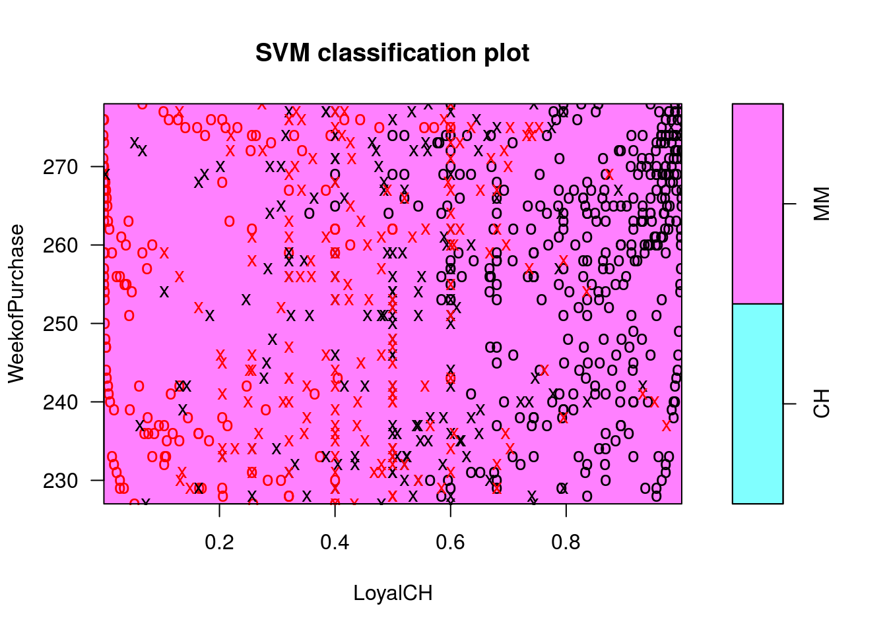
## Classificação dos dados de teste
pred.te1p <- predict(c1p, newdata = OJ.te, probability = TRUE)
probs.te1p <- attr(pred.te1p, "probabilities")[, 2]
roc.te1p <- ROC(test = probs.te1p, stat = OJ.te$Purchase, plot = "ROC")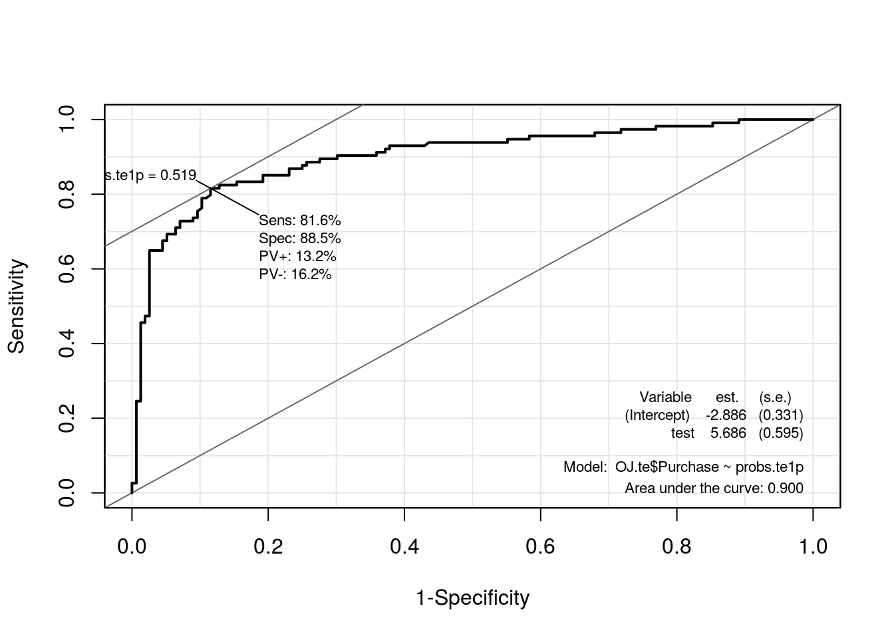
##----------------------------------------------------------------------
## Comparando via AUC, Sensibilidade, Especificidade, Negativo/Positivo,
## Positivo/Negativo e Pontos de Corte respectivamente.
models.poly <- list("c0p.teste" = roc.te0p, "c1p.teste" = roc.te1p)
## Armazenando o classificador de melhor desempenho
models.final$polynomial <- roc.te1p
kable(compareROC(models.poly), align = c("c", "c"))| c0p.teste | c1p.teste | |
|---|---|---|
| sens | 0.7982 | 0.8158 |
| spec | 0.891 | 0.8846 |
| pvp | 0.142 | 0.1321 |
| pvn | 0.1574 | 0.1622 |
| prob | 0.4689 | 0.5192 |
| AUC | 0.8891 | 0.9004 |
\[ K(x_i, x_k) = \exp(-\gamma \left \| x_i, \, x_k \right \|^2 ) \]
##----------------------------------------------------------------------
## kernel = radial basis
(c0r <- svm(Purchase ~ ., kernel = "radial", data = OJ.tr,
probability = TRUE))##
## Call:
## svm(formula = Purchase ~ ., data = OJ.tr, kernel = "radial",
## probability = TRUE)
##
##
## Parameters:
## SVM-Type: C-classification
## SVM-Kernel: radial
## cost: 1
## gamma: 0.05555556
##
## Number of Support Vectors: 373## Resumo do modelo
summary(c0r)##
## Call:
## svm(formula = Purchase ~ ., data = OJ.tr, kernel = "radial",
## probability = TRUE)
##
##
## Parameters:
## SVM-Type: C-classification
## SVM-Kernel: radial
## cost: 1
## gamma: 0.05555556
##
## Number of Support Vectors: 373
##
## ( 187 186 )
##
##
## Number of Classes: 2
##
## Levels:
## CH MM## Classificação dos dados de teste
pred.te0r <- predict(c0r, newdata = OJ.te, probability = TRUE)
probs.te0r <- attr(pred.te0r, "probabilities")[, 2]
roc.te0r <- ROC(test = probs.te0r, stat = OJ.te$Purchase, plot = "ROC")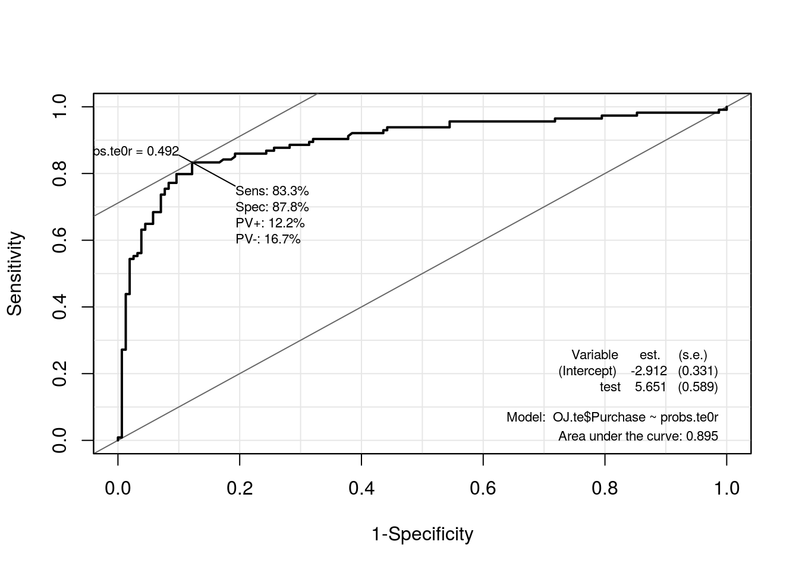
## Tuning dos parâmetros (um pouco demorado)
set.seed(2016)
(svm.tune <- tune(svm, Purchase ~ ., data = OJ.tr,
kernel = "radial",
ranges = list(
cost = c(0.01, 1, 10),
gamma = c(0.001, 0.01, 1/ncol(OJ), 0.1, 0.5, 1)
)))##
## Parameter tuning of 'svm':
##
## - sampling method: 10-fold cross validation
##
## - best parameters:
## cost gamma
## 1 0.05555556
##
## - best performance: 0.16625summary(svm.tune)##
## Parameter tuning of 'svm':
##
## - sampling method: 10-fold cross validation
##
## - best parameters:
## cost gamma
## 1 0.05555556
##
## - best performance: 0.16625
##
## - Detailed performance results:
## cost gamma error dispersion
## 1 0.01 0.00100000 0.37875 0.04678927
## 2 1.00 0.00100000 0.20375 0.03537988
## 3 10.00 0.00100000 0.18250 0.03238227
## 4 0.01 0.01000000 0.37875 0.04678927
## 5 1.00 0.01000000 0.18125 0.01792151
## 6 10.00 0.01000000 0.18125 0.02144923
## 7 0.01 0.05555556 0.37875 0.04678927
## 8 1.00 0.05555556 0.16625 0.02045490
## 9 10.00 0.05555556 0.18750 0.02568506
## 10 0.01 0.10000000 0.37875 0.04678927
## 11 1.00 0.10000000 0.17625 0.02461509
## 12 10.00 0.10000000 0.19000 0.02486072
## 13 0.01 0.50000000 0.37875 0.04678927
## 14 1.00 0.50000000 0.20125 0.03606033
## 15 10.00 0.50000000 0.20875 0.04752558
## 16 0.01 1.00000000 0.37875 0.04678927
## 17 1.00 1.00000000 0.20625 0.03019037
## 18 10.00 1.00000000 0.22125 0.04528076svm.tune$best.parameters## cost gamma
## 8 1 0.05555556## Resumo do modelo
plot(c0r, OJ.tr, WeekofPurchase ~ LoyalCH)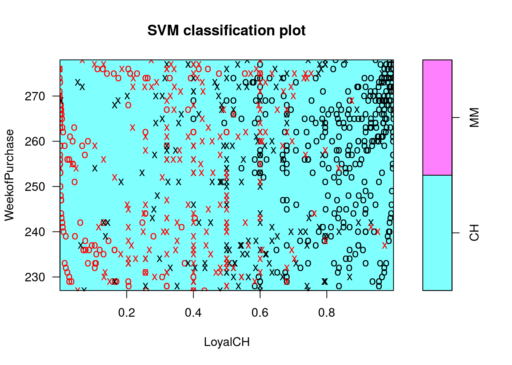
## Armazenando o classificador de melhor desempenho
models.final$radial <- roc.te0r\[ K(x_i, x_k) = \tanh(c_0 + \gamma \left \langle x_i, \, x_k \right \rangle ) \]
##----------------------------------------------------------------------
## kernel = sigmoid default
(c0s <- svm(Purchase ~ ., kernel = "sigmoid", data = OJ.tr,
probability = TRUE))##
## Call:
## svm(formula = Purchase ~ ., data = OJ.tr, kernel = "sigmoid",
## probability = TRUE)
##
##
## Parameters:
## SVM-Type: C-classification
## SVM-Kernel: sigmoid
## cost: 1
## gamma: 0.05555556
## coef.0: 0
##
## Number of Support Vectors: 309## Resumo do modelo
summary(c0s)##
## Call:
## svm(formula = Purchase ~ ., data = OJ.tr, kernel = "sigmoid",
## probability = TRUE)
##
##
## Parameters:
## SVM-Type: C-classification
## SVM-Kernel: sigmoid
## cost: 1
## gamma: 0.05555556
## coef.0: 0
##
## Number of Support Vectors: 309
##
## ( 153 156 )
##
##
## Number of Classes: 2
##
## Levels:
## CH MM## Classificação dos dados de teste
pred.te0s <- predict(c0s, newdata = OJ.te, probability = TRUE)
probs.te0s <- attr(pred.te0s, "probabilities")[, 2]
roc.te0s <- ROC(test = probs.te0s, stat = OJ.te$Purchase, plot = "ROC")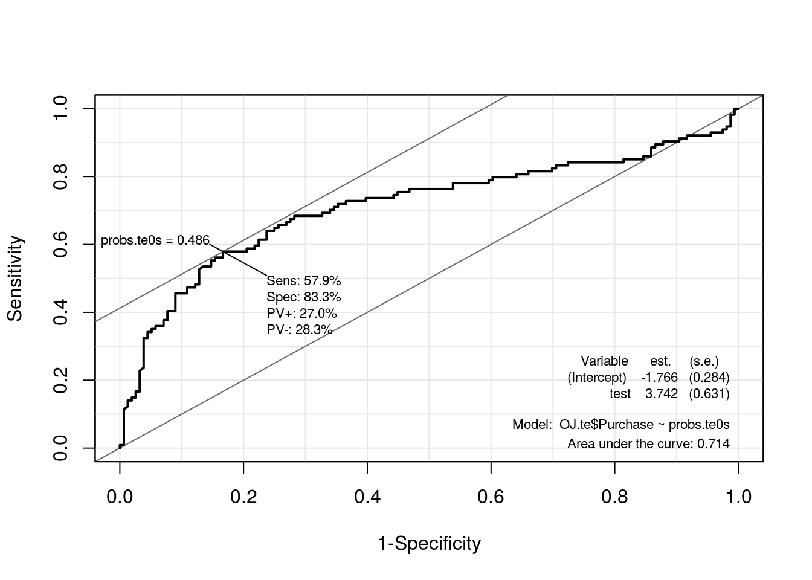
## Tuning dos parâmetros (um pouco demorado)
set.seed(2016)
(svm.tune <- tune(svm, Purchase ~ ., data = OJ.tr,
kernel = "sigmoid",
ranges = list(
cost = c(0.01, 1, 10),
gamma = c(0.001, 0.01, 1/ncol(OJ), 0.1, 0.5, 1),
coef0 = c(-1, 0, 1)
)))##
## Parameter tuning of 'svm':
##
## - sampling method: 10-fold cross validation
##
## - best parameters:
## cost gamma coef0
## 10 0.01 0
##
## - best performance: 0.17125summary(svm.tune)##
## Parameter tuning of 'svm':
##
## - sampling method: 10-fold cross validation
##
## - best parameters:
## cost gamma coef0
## 10 0.01 0
##
## - best performance: 0.17125
##
## - Detailed performance results:
## cost gamma coef0 error dispersion
## 1 0.01 0.00100000 -1 0.37875 0.04678927
## 2 1.00 0.00100000 -1 0.37875 0.04678927
## 3 10.00 0.00100000 -1 0.17875 0.03175973
## 4 0.01 0.01000000 -1 0.37875 0.04678927
## 5 1.00 0.01000000 -1 0.17875 0.03586723
## 6 10.00 0.01000000 -1 0.17750 0.02415229
## 7 0.01 0.05555556 -1 0.37875 0.04678927
## 8 1.00 0.05555556 -1 0.18500 0.03987829
## 9 10.00 0.05555556 -1 0.21125 0.03197764
## 10 0.01 0.10000000 -1 0.37875 0.04678927
## 11 1.00 0.10000000 -1 0.26500 0.06089609
## 12 10.00 0.10000000 -1 0.28750 0.04750731
## 13 0.01 0.50000000 -1 0.30500 0.06697844
## 14 1.00 0.50000000 -1 0.39250 0.07997395
## 15 10.00 0.50000000 -1 0.39625 0.08313518
## 16 0.01 1.00000000 -1 0.29625 0.06181570
## 17 1.00 1.00000000 -1 0.39875 0.06386020
## 18 10.00 1.00000000 -1 0.40375 0.06536489
## 19 0.01 0.00100000 0 0.37875 0.04678927
## 20 1.00 0.00100000 0 0.34625 0.05104804
## 21 10.00 0.00100000 0 0.18625 0.03030516
## 22 0.01 0.01000000 0 0.37875 0.04678927
## 23 1.00 0.01000000 0 0.18500 0.02934469
## 24 10.00 0.01000000 0 0.17125 0.02503470
## 25 0.01 0.05555556 0 0.37875 0.04678927
## 26 1.00 0.05555556 0 0.29875 0.04875178
## 27 10.00 0.05555556 0 0.27750 0.06313566
## 28 0.01 0.10000000 0 0.37875 0.04678927
## 29 1.00 0.10000000 0 0.31125 0.06220765
## 30 10.00 0.10000000 0 0.28625 0.04226652
## 31 0.01 0.50000000 0 0.31500 0.05645795
## 32 1.00 0.50000000 0 0.39000 0.05676462
## 33 10.00 0.50000000 0 0.39375 0.05870418
## 34 0.01 1.00000000 0 0.31125 0.05604128
## 35 1.00 1.00000000 0 0.40250 0.05645795
## 36 10.00 1.00000000 0 0.40500 0.06619626
## 37 0.01 0.00100000 1 0.37875 0.04678927
## 38 1.00 0.00100000 1 0.37875 0.04678927
## 39 10.00 0.00100000 1 0.18000 0.03395258
## 40 0.01 0.01000000 1 0.37875 0.04678927
## 41 1.00 0.01000000 1 0.18375 0.03488573
## 42 10.00 0.01000000 1 0.24250 0.04456581
## 43 0.01 0.05555556 1 0.37875 0.04678927
## 44 1.00 0.05555556 1 0.30875 0.04566256
## 45 10.00 0.05555556 1 0.32250 0.04322101
## 46 0.01 0.10000000 1 0.37875 0.04678927
## 47 1.00 0.10000000 1 0.37625 0.03747684
## 48 10.00 0.10000000 1 0.37125 0.03775377
## 49 0.01 0.50000000 1 0.33875 0.05756940
## 50 1.00 0.50000000 1 0.38875 0.06358776
## 51 10.00 0.50000000 1 0.36750 0.04174992
## 52 0.01 1.00000000 1 0.32625 0.05787019
## 53 1.00 1.00000000 1 0.39000 0.05737305
## 54 10.00 1.00000000 1 0.39500 0.05898446svm.tune$best.parameters## cost gamma coef0
## 24 10 0.01 0##-------------------------------------------
## Definindo os melhor classificador com base nas validações cruzadas
c1s <- svm(Purchase ~ ., kernel = "sigmoid", data = OJ.tr,
cost = 10, gamma = 0.01, coef0 = 0, probability = TRUE)
## Resumo do modelo
summary(c1s)##
## Call:
## svm(formula = Purchase ~ ., data = OJ.tr, kernel = "sigmoid",
## cost = 10, gamma = 0.01, coef0 = 0, probability = TRUE)
##
##
## Parameters:
## SVM-Type: C-classification
## SVM-Kernel: sigmoid
## cost: 10
## gamma: 0.01
## coef.0: 0
##
## Number of Support Vectors: 343
##
## ( 173 170 )
##
##
## Number of Classes: 2
##
## Levels:
## CH MMplot(c1s, OJ.tr, WeekofPurchase ~ LoyalCH)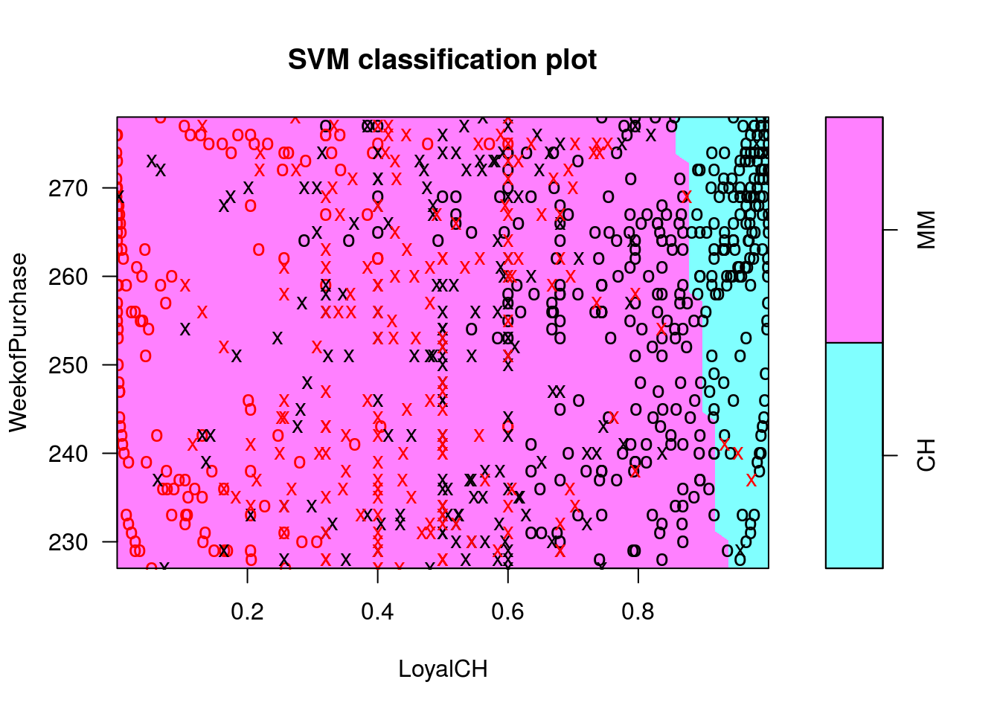
## Classificação dos dados de teste
pred.te1s <- predict(c1s, newdata = OJ.te, probability = TRUE)
probs.te1s <- attr(pred.te1s, "probabilities")[, 2]
roc.te1s <- ROC(test = probs.te1s, stat = OJ.te$Purchase, plot = "ROC")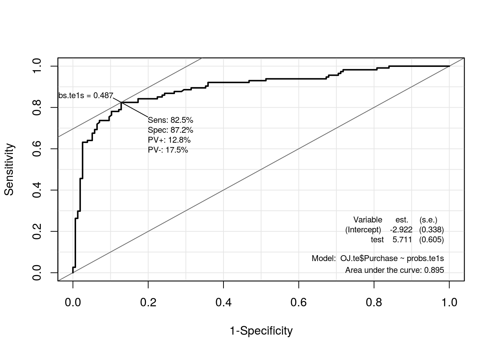
##----------------------------------------------------------------------
## Comparando via AUC, Sensibilidade, Especificidade, Negativo/Positivo,
## Positivo/Negativo e Pontos de Corte respectivamente.
models.sigmoid <- list("c0s.teste" = roc.te0s, "c1s.teste" = roc.te1s)
## Armazenando o classificador de melhor desempenho
models.final$sigmoid <- roc.te1s
kable(compareROC(models.sigmoid), align = c("c", "c"))| c0s.teste | c1s.teste | |
|---|---|---|
| sens | 0.5789 | 0.8246 |
| spec | 0.8333 | 0.8718 |
| pvp | 0.2697 | 0.1282 |
| pvn | 0.2826 | 0.1754 |
| prob | 0.4862 | 0.4871 |
| AUC | 0.7142 | 0.8946 |
## Comparação visual
plot(0, 0, xlim = c(0, 1), ylim = c(0, 1), type = "n",
xlab = "1-Specificity", ylab = "Sensitivity")
abline(v = seq(0, 1, 0.1), h = seq(0, 1, 0.1), col = "gray90")
abline(0, 1, col = "gray40")
##
sapply(1:length(models.final), function(i) {
with(models.final[[i]],
points(1 - res[, 2], res[, 1], type = "l", col = i))
})## [[1]]
## NULL
##
## [[2]]
## NULL
##
## [[3]]
## NULL
##
## [[4]]
## NULL##
legend(x = 0.7, y = 0.4, lwd = 1,
bty = "n", col = 1:length(models.final),
legend = names(models.final))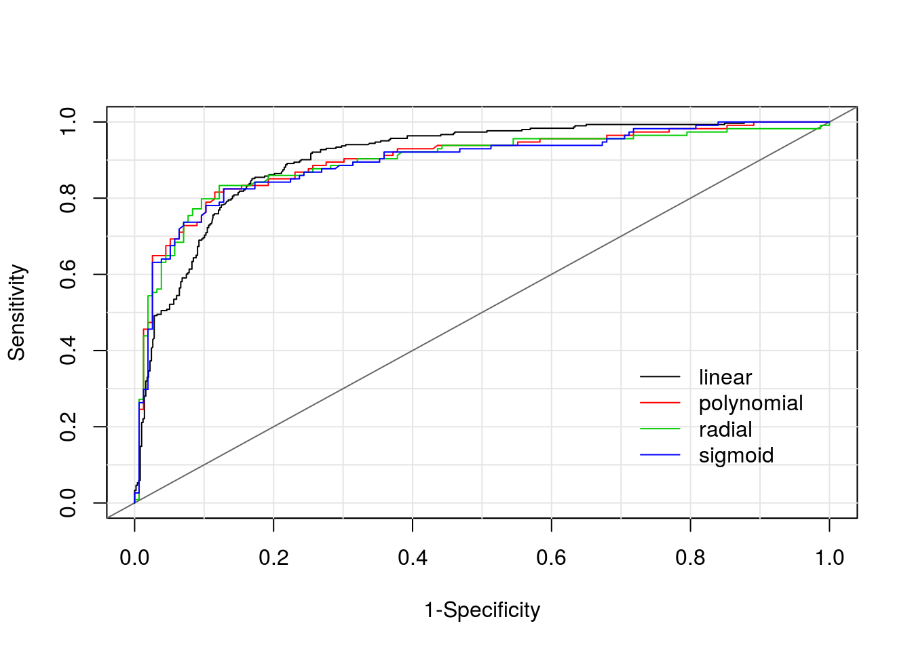
## Comparação das medidas de classificação
kable(compareROC(models.final), align = c("c", "c", "c", "c"))| linear | polynomial | radial | sigmoid | |
|---|---|---|---|---|
| sens | 0.8515 | 0.8158 | 0.8333 | 0.8246 |
| spec | 0.831 | 0.8846 | 0.8782 | 0.8718 |
| pvp | 0.0983 | 0.1321 | 0.1218 | 0.1282 |
| pvn | 0.2456 | 0.1622 | 0.1667 | 0.1754 |
| prob | 0.3741 | 0.5192 | 0.4915 | 0.4871 |
| AUC | 0.9064 | 0.9004 | 0.8954 | 0.8946 |
Proponha um classificador baseado em Supporte Vector Machine para classificar a espécie das plantas no conjunto de dados iris do R. Considere ao menos 2 classificadores para comparação via classificação em uma base de teste.
Para particionar os dados em base de treino e teste, pode-se seguir os comandos abaixo.
##======================================================================
## Sabatina
data(iris, package = "datasets")
## Dados balanceados com base na espécie
table(iris$Species)##
## setosa versicolor virginica
## 50 50 50## Utilize como semente seu GRR
set.seed(20124689)
index <- matrix(c(0, 50, 100), ncol = 3, nrow = 30, byrow = TRUE) +
replicate(3, sample(1:50, 30))
## Particione os dados em dados de treino e dados de teste
iris.tr <- iris[c(index), ]
iris.te <- iris[-c(index), ]
## Dados balanceados para treino também
table(iris.tr$Species)##
## setosa versicolor virginica
## 30 30 30table(iris.te$Species)##
## setosa versicolor virginica
## 20 20 20cat(format(Sys.time(),
format = "Atualizado em %d de %B de %Y.\n\n"))## Atualizado em 08 de agosto de 2016.sessionInfo()## R version 3.3.1 (2016-06-21)
## Platform: x86_64-pc-linux-gnu (64-bit)
## Running under: Ubuntu 14.04.5 LTS
##
## locale:
## [1] LC_CTYPE=en_US.UTF-8 LC_NUMERIC=C
## [3] LC_TIME=pt_BR.UTF-8 LC_COLLATE=en_US.UTF-8
## [5] LC_MONETARY=pt_BR.UTF-8 LC_MESSAGES=en_US.UTF-8
## [7] LC_PAPER=pt_BR.UTF-8 LC_NAME=C
## [9] LC_ADDRESS=C LC_TELEPHONE=C
## [11] LC_MEASUREMENT=pt_BR.UTF-8 LC_IDENTIFICATION=C
##
## attached base packages:
## [1] parallel stats graphics grDevices utils datasets methods
## [8] base
##
## other attached packages:
## [1] e1071_1.6-7 klaR_0.6-12 Epi_2.0
## [4] MASS_7.3-45 glmnet_2.0-5 foreach_1.4.3
## [7] Matrix_1.2-6 mboost_2.6-0 stabs_0.5-1
## [10] knitr_1.12.3 latticeExtra_0.6-28 RColorBrewer_1.1-2
## [13] lattice_0.20-33
##
## loaded via a namespace (and not attached):
## [1] Rcpp_0.12.5 compiler_3.3.1 formatR_1.3
## [4] highr_0.5.1 plyr_1.8.3 class_7.3-14
## [7] iterators_1.0.8 tools_3.3.1 digest_0.6.9
## [10] evaluate_0.9 cmprsk_2.2-7 yaml_2.1.13
## [13] mvtnorm_1.0-5 coin_1.1-2 stringr_1.0.0
## [16] combinat_0.0-8 stats4_3.3.1 grid_3.3.1
## [19] survival_2.39-4 etm_0.6-2 rmarkdown_0.9.6
## [22] multcomp_1.4-5 TH.data_1.0-7 magrittr_1.5
## [25] codetools_0.2-14 htmltools_0.3 modeltools_0.2-21
## [28] nnls_1.4 splines_3.3.1 strucchange_1.5-1
## [31] quadprog_1.5-5 sandwich_2.3-4 stringi_1.0-1
## [34] party_1.0-25 zoo_1.7-13